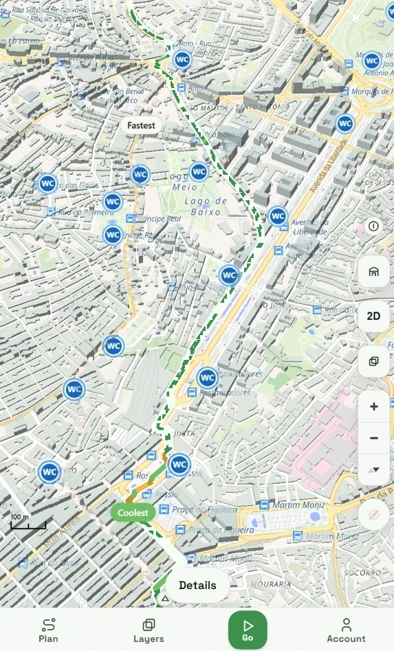
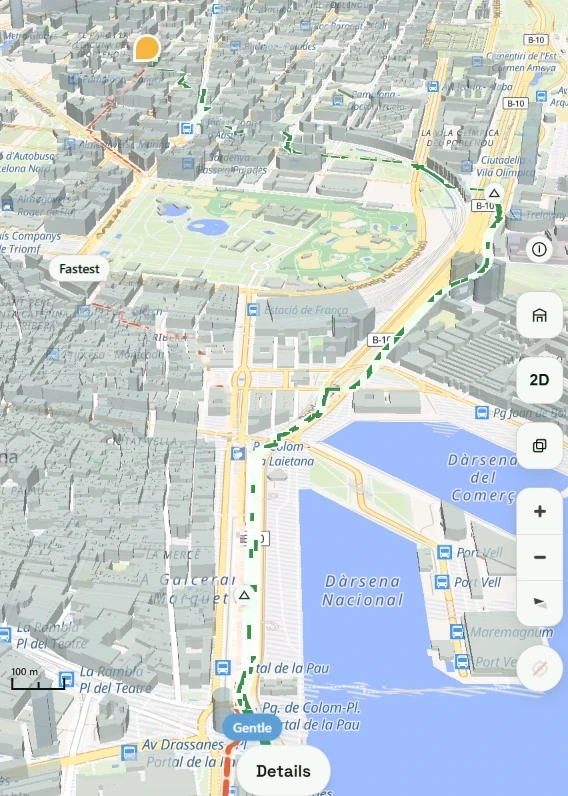
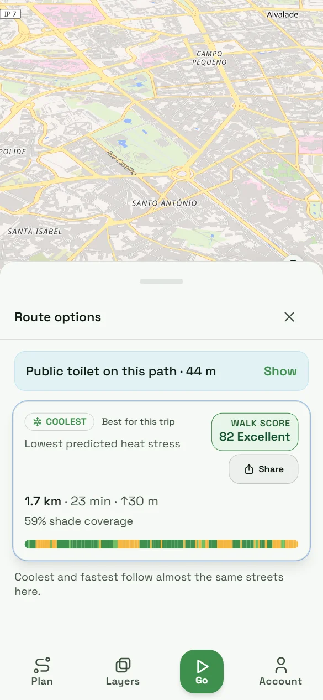

Free app
No ads. The walk is free.
GreenRah
The problem
Your map shows the fastest way. Not the weather. Not the sun hours. Not the shade.
The solution
The GreenRah comfort engine combines five layers into one comfort score and a shade list.
Heat smart
Lisbon · Igreja do Menino Deus → 15 Travessa do Barbosa · 19 Oct, 13:55

Accessible mode
Barcelona · la Marina del Prat Vermell → Iveco Goncas, Carrer dels Almogavers · 18 Oct, 13:40
Coolest vs fastest using shade, UTCI and sun exposure.Step-free routes with the lowest slope.

Built for summer
In a heatwave, a drinking tap is not a detail. It is safety. GreenRah shows taps and WCs across Europe and Great Britain, and it factors in clouds too.

For everyone who walks
Competition
| Google Maps | ShadeMap | ALKOO | Komoot | GreenRah | |
|---|---|---|---|---|---|
| Walking route | ✓ | ✕ | ✓ | ✓ | ✓ |
| Shade & sun | ✕ | shadows only | ✓ | ✕ | ✓ |
| Weather changes route | ✕ | ✕ | info only | info only | ✓ |
| Gentle, step-free | ✕ | ✕ | graph only | profile only | ✓ |
Shade apps show shade. Weather apps show forecasts. Only GreenRah uses both to choose the route. Based on public features, Oct 2026.
City Insights
A dashboard built from real walking trips, so cities can act on heat.
How it helps. Plan trees and shade, support local shops on hot streets, measure impact.
Aggregated, anonymous, GDPR-compliant. No personal data.
Business model
No ads. The walk is free.
EUR 1.99/month
Health features: steps, km.
EUR 6k / city / year
For municipalities. Consultant heat studies cost EUR 15k–80k.
Live now: web app + Android. Across Europe and Great Britain, 1,470+ cities. iPhone coming.
The cooler way.